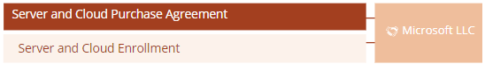
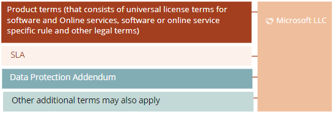

Detailed walk through of Microsoft Enterprise Agreement (EA),
including Product Terms, SLA, and Data Protection Addendum
When you subscribe to, or purchase perpetual, software licenses or
subscribe to Online-services directly from Microsoft through an
Enterprise Agreement, the Enterprise Agreement with annexes normally
consist of the following documents:
For Online-services the following documents also apply (not reviewed):

It also incorporates additional terms, that applies under any program:

For some sectors, additional terms and conditions may apply, such as
for bank and finance. There may also be eligibility requirements in
order to subscribe to certain services for sectors, such as education or
public sector.
Note that it is also possible to contract software products and
Online-services through other contract types, for instance under the MCA
program or MOSA for Online services. See more about Microsoft’s
different programs here.
Note also that subscription of online services under the Enterprise
Agreement is no longer possible for private entities but must be done
under MCA or other Microsoft programs. Public customers may however
still subscribe to online services under the Enterprise Agreement.
We highlight the following key findings in the Microsoft
Enterprise Agreement (incl. Product Terms, SLA and DPA) seen from a
customer perspective:
 Qualification requirements:
Qualification requirements:
-
To qualify for an enterprise agreement, you need to order at
least 500 Licenses in a single Product pool for Enterprise Products,
covering Qualified Users / Qualified Devices.
Commercial:
-
Fees: Prices and payment terms are determined by Microsoft Sales
Affiliate, set out in the Customer Price Sheet. Payment for software is
normally linked to list prices and the applicable customer price level
you qualify to (based on the volume of your total commitment). Price
levels vary from A-D.
-
Prices will be fixed through the applicable initial or renewal
enrollment, provided customer qualifies for the same price level
for the entire term.
-
Microsoft can at its sole discretion change the price level for
future new orders.
-
Customer may choose to pay upfront or spread the payment in three
equal installments. Invoices will be adjusted based on true-up/true
down, and payment for the reserved licenses may be postponed until the
next true-up order and shall be invoiced retroactively to the month in
which the reserved licenses were ordered. Invoices will be adjusted to
reflect any reduction in Subscription Licenses. Mid-term orders for
products must be paid upfront, and online services may be paid annually
or upfront.
-
All prices are exclusive of taxes. Normally this will be added by
the Microsoft Sales Affiliate that invoice you. Should be checked before
agreement is entered into.
-
Audit; Microsoft has a right to verify compliance with license
metrics, subject to a 30 days prior written notice. If the verification
reveals excessive use above 5%, then customer must pay the cost of the
audit and pay for such additional licenses at 125% of the then current
list price /applicable customer price level. If an audit has been
conducted, and customer was sufficiently licensed, Microsoft will not
conduct a new audit the coming year.
License specifics, general:
-
Customers obtain a non-exclusive, worldwide right to use software
products, in the quantity ordered.
-
The use right for subscription licenses applies for the
subscription term.
-
You need separate licenses for users vs devices. E.g., all
licenses need to be assigned to a device or user as appropriate, but may
be reassigned. Reassignment cannot happen more often than 90 days,
unless because of hardware failure, if employees quit, or temporary
reallocation of CAL’s, Client Management Licenses or SLs to cover a
user’s absence or unavailability of a device.
-
Licenses must be activated with a product key.
-
You may make as many copies as needed to distribute them within
your Enterprise. You may also use:
-
up to 20 copies of licenses products in a dedicated training
facility,
-
use up to 10 copies of products for a 60-day evaluation
period
-
and use one copy of all products to back-up or archival purposes
in each of your locations.
-
There is also a limited re-imaging right
-
You may not:
-
Use the products to offer commercial hosting services to third
parties or work around technical limitations
-
Conduct benchmark testing and share the result with third parties
without Microsoft’s approval
-
separate and run parts of a Product or Fix on more than one
device, upgrade or downgrade parts of a Product or Fix at different
times, or transfer parts of a Product or Fix separately. Multiplexing
does not reduce the number of Licenses needed.
-
Subscription licenses (and software assurance) are temporary and
expire normally when the applicable enrollment expires/terminates. For
some products, customer may have a buyout option. Note that software
assurance often give you use rights to additional functionality (vital
to you), and if SA is not renewed for a product where you have perpetual
use rights, you still cannot use such additional functionality.
-
The use rights/restrictions per product, are described in Product
Terms, which are important to review, in order to have control over that
your intended use is covered by the licenses granted, or whether you
risk procuring additional licenses.
-
Product Term updates apply for you, for versioned software, but
materially changes after you entered into your contract (enrollment),
will not apply during the enrollment term unless you choose to use a new
version. That updated use restrictions may be introduced through the
agreement term, poses a risk, as this may change included use/what needs
to be paid extra for. E.g the TCO become uncertain, and if you have
negotiation strength, you should consider negotiating this to the
better. If you however license Enterprise Products, updated Product
Terms for a version, does not apply during the initial term or renewal
term.
-
You must order and maintain continuous Software Assurance for
each License ordered. E.g you cannot terminate Software Assurance until
the enrollment expire, and you enter into a new one. If terminated, you
will need to buy new licenses to get SA again.
License specifics, orders, true-up, step-up etc:
-
Product not previously ordered can be used first when an order is
submitted.
-
For products already licensed, additional licenses can be used at
any time but must be included in the next true-up order.
-
The true-up, gives you flexibility to increase your use of
already licensed products (e.g more user or device licenses etc) without
ordering such from Microsoft before the end of each agreement
year.
-
The deadline to send such update statement is 30 days before the
end of the agreement year, at the earliest 60 days before.
-
For “Enterprise Products”, the order shall list the number of
qualified devices or users when the true up-order is placed.
E.g., you do not have to pay for additional licenses you have had
through the year, that are removed again.
-
For “Additional Products”, you pay for the highest number
used since the initial order (or the last true-up or anniversary
date, if not ordered the same year).
-
For online services you can for some services also use the
true-up, but you have to place a reservation order.
-
If you forget, you must wait a year (with the audit risk this
entails as the prices will be 125%).
-
The is a limited right to true-down for subscription licenses if
your use through additional orders or true-up orders is above the
initial quantity. (Step-up licenses or add-on Subscription Licenses are
not relevant in the count).
-
Some licenses may be upgraded to higher editions (Step-up). This
is ordered as for other software products (true-up is allowed if
included in the initial order, if not a new order must be placed
etc)
License specifics, assignment, acquisitions, divestures etc:
-
Fully paid perpetual licenses may be transferred to your
affiliates or third parties in connection with transfer of hardware or
employees as part of a divesture, merger or similar. Such transfer must
be notified to Microsoft according to the contract wording, but not
necessarily according to case law.
-
You cannot transfer Software Assurance, unless licenses are
reassigned within your enterprise.
-
In an affiliated company ceases to be owned 50%, Microsoft must
be notified, and continued use presuppose that Microsoft accepts. There
is no grace period/transitional period.
-
If you acquire another company, sell parts of your company or
merge with a third party, and your number of licenses change with more
than 10%, then Microsoft will work with you in good faith to accommodate
the changed circumstances.
Business continuity:
-
Subscription period/termination notice: The MBSA and the EA
Agreement has no set duration and may be terminated by either party for
convenience with 60 days written notice. The EA Purchase Agreement and
EA Enrollment, however, has a 36-month duration, with an option to renew
for additional 36 months. Note however that Microsoft may reject renewal
(will not unreasonably reject). If the MBSA and EA Agreement is
terminated, this does not affect existing orders/enrollments, but new
ones cannot be entered into.
-
Some Online services may continue beyond 36 (+ 36) months, unless
explicitly cancelled minimum 30 days prior to the expiration date
(Extended Term). The prices will however be +3% administrative fee, so
such a situation should be avoided, as its possible to get better
prices.
-
Suspension: The is a suspension right for Microsoft in the
Acceptable Use Policy regulation in Product Terms, where the threshold
for suspension is only “to the extent reasonably necessary”. Customer
will receive notice in reasonable time before suspension happens, unless
Microsoft «believes an immediately suspension is required”. E.g.,
Microsoft may suspend all Online services and not only the affected
service, can lock out all users and not only the user breaching the
policy, and customer is not guaranteed a notification in advance/a right
to cure before suspension happens. In addition, Microsoft may suspend
the services if customer is in material breach (for instance if you are
under-licensed) and will only give notice «when reasonable». For
business-critical solutions, where you subscribe this poses a risk from
a customer perspective.
-
Infringement: In case Customer receives a third-party claim
alleging that the use of the Online services infringes such third party
IPR, Microsoft may choose between modifying or replacing the services or
terminate the service with immediate effect. There is no
obligation for Microsoft to for instance use «all reasonable efforts» to
resolve or replace the affected service, before Microsoft may choose to
terminate and refund any prepaid fees. The termination right is absolute
and do not consider the consequences for the customer, e.g., is it
possible to establish an alternative service fast for the
customer?
-
Immediate termination right: In case of material breach, which is
not cured within 30 days after notice, either party may terminate with
immediate effect. E.g., if Microsoft terminate the customer
cannot expect or require the online service, or continue to use
subscription software, for a «transitional» period, until the customer
has successfully established alternative services. For business-critical
solutions, this poses a risk from a customer perspective.
-
Termination right, Material breach of one Enrollment which
“affects” other Enrollments, also give Microsoft a right to terminate
such other Enrollments.
 Solutioning:
Solutioning:
-
Change to or removal of online services: Microsoft may according
to the product terms remove or replace online services at any
time, however removal or replacement of material features or
functionality normally presuppose 12 months’ notice except that an
expedited removal is allowed if required due to security, legal or
system performance considerations. E.g. this may from time to time make
it difficult to plan for the changes for the customer, and in a
worst-case scenario it may affect customers operations. For the services
you buy, you should therefore investigate their update frequency and
when such updates become mandatory/cannot be postponed anymore.
-
Changes to or removal of functionality in software products, is
not addressed. E.g. Microsoft may freely do this in new versions. You
should investigate how long you can continue to use existing
versions/when sunset of support happens.
-
For online- services, SLAs are normally given (and compensated)
for the individual service, not necessarily the combined “solution” you
buy to support your business needs. This means that if you buy several
services which has similar uptime, for instance 99,9, this will not be
the actual availability offered by Microsoft as the actual uptime will
be the multiplication of each of the individual online service uptime
percentages, which normally will be lower.
 Legal:
Legal:
-
Limited warranty: Microsoft disclaims all liability for loss due
to errors/downtime in software/Online services, which is fairly normal
in the “average” license agreement. Customers only sanction for online
services is «Service Credits» (a percentage of the monthly amounts paid,
given as a credit), provided Microsoft accept the customer claim for
credits. For software a 12-month limited warranty promise that the
software will perform substantially as described in the documentation,
if not Microsoft as a sole remedy may either repair or return the
license fees. E.g. customer has limited rights to withhold payment or
claim damages due to errors/downtime, terminate for cause etc. E.g there
is no traditional maintenance/SLA commitment from Microsoft as to how
quick critical errors in software are corrected.
-
Liability general: Both parties’ liability is limited to an
amount equaling the amounts paid during the 12 months prior to the
incident.
-
Customer liability, carve outs from the normal liability cap: If
customer breaches confidentiality (for instance tells a third party of
the contents of its agreement with Microsoft and which is not publicly
known), violates Microsoft IPR (such as being under-licensed) or
Microsoft faces a third party claim due to customer data (including
customer owned or licensed applications) or breaches the IPR of such
third party, no limitations of liability apply.
-
Customer liability for affiliates or third parties: As a customer
you are allowed to let your affiliates use the Online-services, external
users (temps, consultants, suppliers etc), and you may also build
offerings (such as SaaS) to your own customers and use Online-services
as part of your offering. For all situations, you are liable for such
party’s compliance with the Microsoft terms and conditions, and for
compensating Microsoft for any loss in this respect. E.g you should
inform your affiliates and external users/customers of important
obligations in the terms and conditions (most importantly the acceptable
use policy, license restrictions and export control rules), and you
should consider asking them for an indemnification if they do not comply
with the regulations.
-
Separate terms: Separate terms may apply for third party services
made available as part of the Online services. Always verify if such
exist or not, and review if applicable.
-
Updated terms and conditions: The MBSA etc will not change during
a subscription, before you accept the changes, however you may be
required to do so for Microsoft to accept new orders/renewal of the
subscription term. The terms and conditions links to additional terms,
such as Product Terms, SLA and DPA. These terms are often updated, often
once a month, and may change to the worse from a customer perspective,
but material adverse changes for a particular version will not apply
during the applicable license, subscription, or billing period.
-
Order of precedence: (1) DPA, (2) MBSA, (3) Enterprise Agreement
(4) Enrollments; (5) Product Terms; (6) DPA and SLA; and (7) any other
documents in the agreement.
-
Jurisdiction: The terms and conditions are subject to Irish law,
even though you reside in another jurisdiction. If you contract directly
will Microsoft, you will also enter into an agreement with the local
Microsoft entity for billing etc, where the venue will be local
Microsoft entities country as venue. This may make it difficult to
initiate a legal process against Microsoft, where aspect related to the
performance of the cloud services/products and third-party claims will
be subject to Irish law, while claims related to payment/license metrics
and similar will be subject to local law.
DPA/Privacy
-
Microsoft’s DPA is from an overall “customer perspective”
acceptable, and in line with what you should expect from a cloud
supplier. It’s fairly balanced seen from a customer perspective.
However, see below with regard to the regulation related to transfer of
personal data.
-
After an update in November 2020, Microsoft undertake to
indemnify data subjects for any material/non-material damage. This is
actually just the same as what follows from GDPR. However, if you are
sued yourself by a data subject, and are held to be jointly liable for
damages also caused by Microsoft, your ability to claim restitution for
damages from Microsoft, is limited by the general limitation of
liability (a sum equaling 12 months service fees).
-
Be especially aware of the regulations related to transfer of
personal data outside EEA. Microsoft confirms in its DPA that EEA
Standard Contractual Clauses (SCC) v.2021 is used to facilitate the
transfer. Furthermore, the DPA includes an Appendix C specifying some
additional safeguards and an attachment 1 including specific GDPR terms.
However, none of these documents implements additional measures as
required according to the Schrems II-decision. The customer, as the
controller, has to carry through a risk assessment in accordance with
art. 32 of the GDPR to verify the extent to which a third party
(including the authorities) may get access to the personal data in
transit, as well as in rest and when the personal data is processed. You
must in this assessment also take into consideration to which extent
data is transferred to third countries without sufficient protection of
personal data in the relation to the authorities’ access to the personal
data. Even if you conclude that the personal data is not transferred or
that the personal data is under all circumstances sufficiently protected
against such access from third party, you must be aware that you,
according to art. 28.1 in the GDPR, can only enter into agreements with
processors that is providing sufficient guarantees to implement
appropriate technical and organisational measures in such a manner that
processing will meet the requirements of this Regulation and ensure the
protection of the rights of the data subjects.” The issue regarding
access to the personal data from the authorities may have been
sufficiently solved contractually in the DPA because Microsoft states
the following in the DPA: “Microsoft will only disclose or provide
access to any Processed Data as required by law provided that the laws
and practices respect the essence of the fundamental rights and freedoms
and do not exceed what is necessary and proportionate in a democratic
society and, as applicable, to safeguard one of the objectives listed in
Article 23(1) of GDPR”. However, the European Data Protection Board
(EDPB) has in its guidelines stated that a controller also has to verify
that the processor is capable of meeting such an obligation. This may be
difficult, especially with regards to USA if the problematic legislation
regarding the authorities access in an assessment is deemed to have
extraterritorial effect. It is therefore still essential that you as a
customer carry out the (country specific) risk assessment in accordance
with the guidelines from EDPB and Data inspectorate. This assessment
must be carried out before you start using the online services.
-
As the other terms and conditions under the MCA, the DPA may be
updated frequently. Look therefore for updates, in good time before your
subscription renews, so you can carry out an updated risk assessment
if/when the terms and conditions are changed.
-
Note that your customer data is deleted 90 days after
expiry/termination.
End remark
As you see, there are many regulations which differ in balance from a
traditional sourcing agreement, and the customer protection is weaker.
The agreement balance is more in line with a traditional license
agreement. The product is standardised (which it must be), you get what
you get, and there are limited possibilities to claim damages etc.
Even though there are many “unfavourable” terms and conditions from a
customer perspective, we do not see many examples that this affects the
customers in daily life. An “average company”, will not face any
problems as long as you pay in time. But if Microsoft does not like your
attitude when using their services, it’s easy for Microsoft to kick you
out. Since the service are standardised, it’s to expect that the terms
and conditions also are standardised and consider that Microsoft
customers are a diverse, spread over many different jurisdictions.
Our clear recommendation is that the balance in the terms and
conditions, should not stop you from going to the cloud. But, since the
risk and responsibilities are as is, you should make a careful and
thorough assessment of the impacts it may have and how you may mitigate
the risks before taking the decision. For several business sectors there
are specific rules and regulations that needs to be fulfilled, and then
you need to map the terms and conditions with such rules. The financial
sector is an example here. Our recommendation is that all customers do a
similar exercise when contracting Online Services or software products
that will have a critical or important impact on your business if they
fail.
Note that there is limited possibility to negotiate “better” terms
with Microsoft. You should not focus your time on trying that, but
rather do a proper risk assessment. Our experience is that it is close
to impossible to negotiate with Microsoft unless you are subject to
general or sector specific rules and regulations where the Microsoft
terms and conditions will not make you compliant, or unless you
do a large commitment for use of Online-services. If you desire to
negotiate, it is also important to subscribe to the online services
under the Enterprise program, as this is the only program that offers
the possibility to negotiate with Microsoft.
Note also that you should establish routines to ensure compliance
with, as a minimum, the following:
-
A true-up order must be sent within 60-30 days before the
anniversary of the agreement
-
If your use does not exceed the previous year, remember to send
an update statement. If not, you increase the risk for an
audit.
-
Since Microsoft may unreasonably object to renewal after the
initial 36 months term, you show get Microsoft to confirm in due time,
if prolongment is desirable. Prolongment for online-services is probably
not a good idea, as the prices increase for the 36 months
prolongment.
-
If you intend to negotiate a new agreement instead of prolonging
the existing up to 6 years, start such negotiation process early,
minimum 12 months before expiry. If not it will be even more difficult
to end up with a good negotiation result.
-
Remember to actively terminate online services that are eligible
for an Extended Term, or enter into a new agreement. Just to continue is
expensive!
-
Remember to inform Microsoft of countries in which Affiliates use
products.